#Loading R packages
pacman::p_load(tidyverse, ggridges, ggdist, ggstatsplot,
ggcorrplot, treemapify, patchwork,
scales, skimr, knitr)Take-home_Ex01
1 Overview
This take-home exercise applies visual analytics to a real Spanish motor insurance portfolio. The goal is to identify factors driving the portfolio’s profitability and volatility through univariate and bivariate visual exploration with statistical validation.
Executive Summary
The following slide deck condenses the five key insights and recommended business actions into 13 slides. Use the arrow keys, click the navigation arrows on the slide, or press F for full screen. The full technical walkthrough — data preparation, methodology and complete bivariate analysis — follows below.
2 Getting Started
3 Data Preparation
3.1 Importing Data
#Importing data with semicolon separator
raw <- read_delim("data/Dataset of motor insurance portfolio.csv",
delim = ";",
locale = locale(decimal_mark = "."),
show_col_types = FALSE)
dim(raw)[1] 354140 47The raw dataset contains 354,140 policy records across 47 variables, covering the years 2022–2024.
3.2 Checking Missing Values
#Counting missing values per column
raw %>%
summarise(across(everything(), ~ sum(is.na(.)))) %>%
pivot_longer(everything(), names_to = "variable",
values_to = "n_missing") %>%
filter(n_missing > 0) %>%
arrange(desc(n_missing))# A tibble: 4 × 2
variable n_missing
<chr> <int>
1 fuel_type 1287
2 vehicle_value 513
3 vehicle_age 2
4 age_driving_licence 2Only four variables contain missing values, with fuel_type having the most (≈ 0.4%). The missingness is low enough to keep all rows.
3.3 Edge Case Audit
#Auditing edge cases that affect KPI denominators
tibble(
check = c("total_premium == 0",
"total_exposure == 0",
"total_claims > 0 but total_incurred == 0",
"vehicle_age > 50"),
n = c(sum(raw$total_premium == 0),
sum(raw$total_exposure == 0),
sum(raw$total_claims > 0 & raw$total_incurred == 0),
sum(raw$vehicle_age > 50, na.rm = TRUE))
)# A tibble: 4 × 2
check n
<chr> <int>
1 total_premium == 0 49
2 total_exposure == 0 49
3 total_claims > 0 but total_incurred == 0 8543
4 vehicle_age > 50 372449 records have both zero premium and zero exposure — these will be dropped as they cannot support ratio computations. The 8,543 records with claims but zero incurred cost are kept (likely IBNR or zero-reserve open claims).
3.4 Cleaning and Converting Variables
#Dropping zero-exposure records and converting categorical variables to factors
clean <- raw %>%
filter(!(total_premium == 0 & total_exposure == 0)) %>%
mutate(
policy_type = factor(policy_type,
levels = c("TP", "TPG", "CC", "COMP_E", "COMP_N")),
policy_status = factor(policy_status, levels = c("A", "C"),
labels = c("Active", "Cancelled")),
business_type = factor(business_type, levels = c("NB", "P"),
labels = c("New business", "Portfolio")),
fuel_type = factor(fuel_type, levels = c("D", "G"),
labels = c("Diesel", "Gasoline")),
municipality_type = factor(municipality_type, levels = c("I", "C", "IS"),
labels = c("Inland", "Coastal", "Islands")),
circulation_area = factor(circulation_area, levels = c("U", "R"),
labels = c("Urban", "Rural")),
payment_frequency = factor(payment_frequency,
levels = c("A", "S", "Q"),
labels = c("Annual", "Semi-annual", "Quarterly"),
ordered = TRUE),
bonus_score = factor(bonus_score, levels = c("B", "N", "G"),
labels = c("Bad", "Neutral", "Good"),
ordered = TRUE),
year_fct = factor(year),
vehicle_brand = fct_lump_n(vehicle_brand, n = 15, other_level = "Other")
)bonus_score and payment_frequency are treated as ordered factors. vehicle_brand originally has 68 unique values with a long tail; the top 15 are kept and the rest grouped as “Other”.
3.5 Creating Profitability and Volatility KPIs
#Building analytical KPIs with division-by-zero guards
clean <- clean %>%
mutate(
loss_ratio = if_else(total_premium > 0,
total_incurred / total_premium, NA_real_),
frequency = if_else(total_exposure > 0,
total_claims / total_exposure, NA_real_),
severity = if_else(total_claims > 0,
total_incurred / total_claims, NA_real_),
pure_premium = if_else(total_exposure > 0,
total_incurred / total_exposure, NA_real_),
has_claim = total_claims > 0
)Four KPIs are derived:
loss_ratio= incurred ÷ premium — the headline profitability indicatorfrequency= claims ÷ exposure — expected number of claims per policy-yearseverity= incurred ÷ claims — average cost per claimpure_premium= incurred ÷ exposure ≈ Frequency × Severity
3.6 Creating Age Bands
#Binning continuous age variables for grouped plots
clean <- clean %>%
mutate(
driver_age_band = cut(driver_age,
breaks = c(-Inf, 25, 35, 50, 65, Inf),
labels = c("<=25", "26-35", "36-50", "51-65", "65+")),
vehicle_age_band = cut(vehicle_age,
breaks = c(-Inf, 3, 7, 12, 20, Inf),
labels = c("0-3", "4-7", "8-12", "13-20", "20+")),
vehicle_value_band = cut(vehicle_value,
breaks = c(-Inf, 10000, 20000, 35000, 60000, Inf),
labels = c("<10k", "10-20k", "20-35k",
"35-60k", "60k+"))
)3.7 Sandbox Summary
#Quick check of the cleaned dataset
tibble(
metric = c("Rows", "Columns",
"Median loss ratio",
"99th percentile loss ratio"),
value = c(nrow(clean),
ncol(clean),
round(median(clean$loss_ratio, na.rm = TRUE), 3),
round(quantile(clean$loss_ratio, 0.99, na.rm = TRUE), 2))
)# A tibble: 4 × 2
metric value
<chr> <dbl>
1 Rows 354091
2 Columns 56
3 Median loss ratio 0
4 99th percentile loss ratio 12.4The cleaned dataset is ready for the analysis sections below.
4 Methodology
This section explains the visual analytics techniques chosen for this analysis and why each was selected. The principle followed throughout is fit the visual to the data: distribution shape, variable type, and the question being asked all dictate which graphic is most informative.
4.1 Choice of Visual Techniques
#Tabulating the technique-to-data-type mapping
tibble(
`Data type or question` = c(
"Numerical variable, roughly symmetric (driver age, vehicle age)",
"Numerical variable, heavily right-skewed (premium, incurred, vehicle value)",
"Loss Ratio with strong zero-inflation (~88% of policies)",
"Categorical variable with few levels (policy type, bonus score)",
"Categorical variable with many levels & long tail (vehicle brand)",
"Time evolution (year-by-year)",
"Two-group mean comparison",
"Three or more group comparison",
"Group comparison plus full distribution shape",
"Two categorical variables (e.g. bonus × claim)",
"Correlations among many numerical variables",
"Within-group volatility comparison",
"Joint distribution of profitability bands and bonus"
),
`Technique chosen` = c(
"Histogram with linear scale",
"Histogram with log10 scale",
"Filtered histogram (loss-bearing only) + dashed break-even line",
"Bar chart with explicit count labels",
"Lollipop + treemap (collapsed top-15 + Other)",
"Column chart and stacked share chart",
"ggbetweenstats with Mann-Whitney test",
"ggbetweenstats with Kruskal-Wallis + pairwise comparisons",
"Ridge plot (geom_density_ridges)",
"ggbarstats with embedded chi-square test",
"Spearman correlation heatmap (ggcorrplot)",
"Coefficient of variation bar chart",
"Heatmap with row-normalised shares"
),
`Why this technique` = c(
"Linear scale reveals the centre and spread when the distribution is well-behaved.",
"Log scale is the only way to see the shape; on a linear axis the bulk of the data is compressed into one bar.",
"Mixing the zero pile-up with positive losses on the same histogram hides the shape of either; the break-even line orients the reader on profitability.",
"Direct, unambiguous, and counts can be read off the chart.",
"A normal bar chart would have 60+ thin bars; lollipop emphasises rank, treemap reveals market structure.",
"Column chart shows absolute growth; stacked share reveals mix changes that absolute counts hide.",
"Non-parametric test is robust to the heavily skewed Loss Ratio distribution; embedded p-value avoids a separate test table.",
"Kruskal-Wallis is the non-parametric ANOVA; pairwise comparisons identify which specific groups differ.",
"Box plots collapse distribution shape into 5 numbers; ridges show whether two groups differ by mean, by tail thickness, or both.",
"Chi-square is the right test for two categoricals; ggbarstats embeds the test result directly in the plot.",
"Spearman is rank-based and therefore robust to the skewed distributions found throughout this dataset.",
"CV (sd ÷ mean) is the standard insurance industry measure of relative dispersion; suitable for comparing groups with very different mean Loss Ratios.",
"Row-normalised shares allow direct comparison across bonus groups even when their sizes are very different (Good is 97% of the book)."
)
) %>%
kable()| Data type or question | Technique chosen | Why this technique |
|---|---|---|
| Numerical variable, roughly symmetric (driver age, vehicle age) | Histogram with linear scale | Linear scale reveals the centre and spread when the distribution is well-behaved. |
| Numerical variable, heavily right-skewed (premium, incurred, vehicle value) | Histogram with log10 scale | Log scale is the only way to see the shape; on a linear axis the bulk of the data is compressed into one bar. |
| Loss Ratio with strong zero-inflation (~88% of policies) | Filtered histogram (loss-bearing only) + dashed break-even line | Mixing the zero pile-up with positive losses on the same histogram hides the shape of either; the break-even line orients the reader on profitability. |
| Categorical variable with few levels (policy type, bonus score) | Bar chart with explicit count labels | Direct, unambiguous, and counts can be read off the chart. |
| Categorical variable with many levels & long tail (vehicle brand) | Lollipop + treemap (collapsed top-15 + Other) | A normal bar chart would have 60+ thin bars; lollipop emphasises rank, treemap reveals market structure. |
| Time evolution (year-by-year) | Column chart and stacked share chart | Column chart shows absolute growth; stacked share reveals mix changes that absolute counts hide. |
| Two-group mean comparison | ggbetweenstats with Mann-Whitney test | Non-parametric test is robust to the heavily skewed Loss Ratio distribution; embedded p-value avoids a separate test table. |
| Three or more group comparison | ggbetweenstats with Kruskal-Wallis + pairwise comparisons | Kruskal-Wallis is the non-parametric ANOVA; pairwise comparisons identify which specific groups differ. |
| Group comparison plus full distribution shape | Ridge plot (geom_density_ridges) | Box plots collapse distribution shape into 5 numbers; ridges show whether two groups differ by mean, by tail thickness, or both. |
| Two categorical variables (e.g. bonus × claim) | ggbarstats with embedded chi-square test | Chi-square is the right test for two categoricals; ggbarstats embeds the test result directly in the plot. |
| Correlations among many numerical variables | Spearman correlation heatmap (ggcorrplot) | Spearman is rank-based and therefore robust to the skewed distributions found throughout this dataset. |
| Within-group volatility comparison | Coefficient of variation bar chart | CV (sd ÷ mean) is the standard insurance industry measure of relative dispersion; suitable for comparing groups with very different mean Loss Ratios. |
| Joint distribution of profitability bands and bonus | Heatmap with row-normalised shares | Row-normalised shares allow direct comparison across bonus groups even when their sizes are very different (Good is 97% of the book). |
4.2 Statistical Validation Strategy
Because the sample size is large (≈ 354,000 policies), conventional p-value cutoffs lose their discriminating power — almost every difference is “significant”. Three deliberate adjustments are therefore applied throughout the bivariate analysis:
Non-parametric tests by default. Loss Ratio is heavily right-skewed and zero-inflated, violating the normality assumption behind ANOVA and Pearson correlation. Kruskal-Wallis, Mann-Whitney and Spearman are used instead.
Effect size, not just p-value. Each interpretation paragraph reports the actual magnitude of the difference (e.g. “0.82 vs 0.41”) rather than relying on significance alone.
Winsorisation at the 99th percentile. Extreme Loss Ratio values (the maximum is 11,349) would distort group means and plot scales. Winsorising at the 99th percentile preserves all observations while preventing tail outliers from dominating visual and statistical comparisons.
4.3 Why ggstatsplot
Most bivariate plots in this report use ggstatsplot instead of plain ggplot2. The reason is that this package embeds the statistical test result inside the plot itself — sample size, test statistic, p-value, effect size, and pairwise comparisons all appear in the figure caption automatically. This satisfies the assignment’s requirement for “statistically validated” findings without forcing readers to flip between charts and a separate results table.
5 Univariate Visual Analysis
This section explores the distribution of individual variables before moving to bivariate analysis. Numerical, categorical and temporal variables are examined separately because each calls for a different visualisation approach.
5.1 Numerical Variables
5.1.1 Driver Age
#Plotting driver age distribution with a histogram
ggplot(clean, aes(x = driver_age)) +
geom_histogram(binwidth = 2, fill = "#7097BB", color = "white") +
labs(title = "Distribution of Driver Age",
x = "Driver age (years)", y = "Number of policies") +
theme_minimal()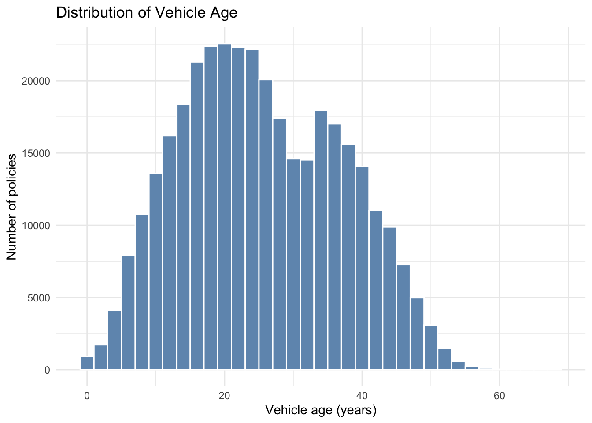
Driver age is roughly symmetric and centred around 48 years, ranging from 18 to 90. There is no extreme skew, and the bulk of the portfolio sits between 35 and 65.
5.1.2 Vehicle Age
#Plotting vehicle age distribution
ggplot(clean, aes(x = vehicle_age)) +
geom_histogram(binwidth = 2, fill = "#7097BB", color = "white") +
labs(title = "Distribution of Vehicle Age",
x = "Vehicle age (years)", y = "Number of policies") +
theme_minimal()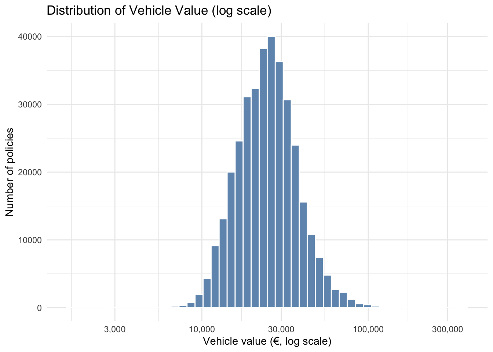
Vehicle age is also fairly symmetric with a median of 25 years. The portfolio leans towards older vehicles, which is consistent with the typical Spanish private motor market.
5.1.3 Vehicle Value
#Plotting vehicle value on a log scale due to heavy right skew
ggplot(clean %>% filter(!is.na(vehicle_value)), aes(x = vehicle_value)) +
geom_histogram(bins = 50, fill = "#7097BB", color = "white") +
scale_x_log10(labels = label_number(big.mark = ",")) +
labs(title = "Distribution of Vehicle Value (log scale)",
x = "Vehicle value (€, log scale)", y = "Number of policies") +
theme_minimal()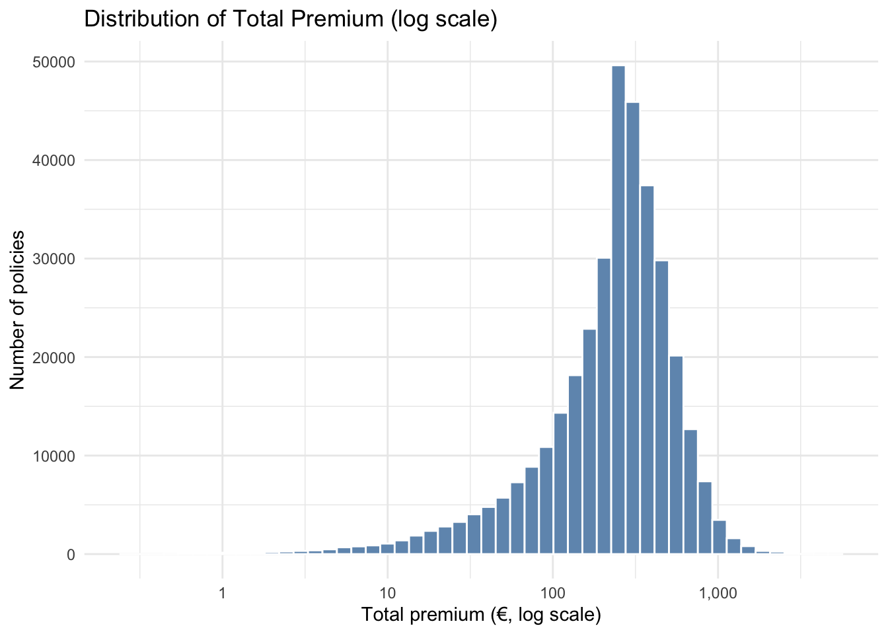
Vehicle value is heavily right-skewed (skewness ≈ 2.2), so a log scale is used to reveal the shape. Most vehicles are valued between €10,000 and €40,000, with a long tail of luxury vehicles extending past €300,000.
5.1.4 Total Premium
#Plotting total premium distribution on a log scale
ggplot(clean, aes(x = total_premium)) +
geom_histogram(bins = 50, fill = "#7097BB", color = "white") +
scale_x_log10(labels = label_number(big.mark = ",")) +
labs(title = "Distribution of Total Premium (log scale)",
x = "Total premium (€, log scale)", y = "Number of policies") +
theme_minimal()
Total premium ranges from less than €1 to over €5,000 and is strongly right-skewed. On a log scale the distribution looks roughly bell-shaped, with most policies clustered between €150 and €500.
5.1.5 Total Incurred (Claims with losses only)
#Plotting incurred losses for policies that actually had claims
ggplot(clean %>% filter(total_incurred > 0), aes(x = total_incurred)) +
geom_histogram(bins = 50, fill = "#D95F02", color = "white") +
scale_x_log10(labels = label_number(big.mark = ",")) +
labs(title = "Distribution of Incurred Losses (Loss-bearing policies only, log scale)",
x = "Incurred amount (€, log scale)", y = "Number of policies") +
theme_minimal()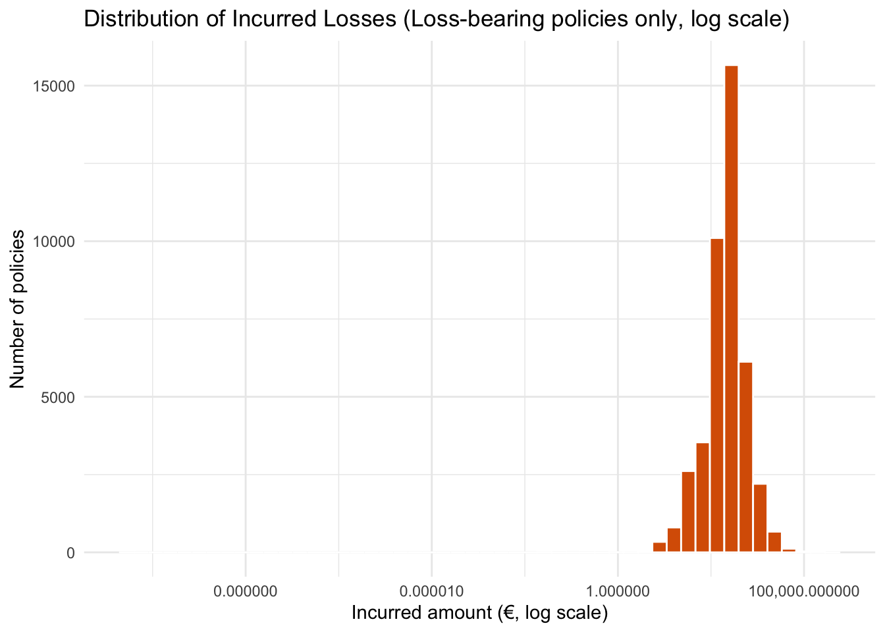
Only 14.3% of policies had any incurred losses. Among those, the distribution is extremely right-skewed even on a log scale, with a small number of catastrophic claims exceeding €100,000. This long tail is the main source of portfolio volatility.
5.1.6 Loss Ratio
#Plotting loss ratio for loss-bearing policies, capped at 99th percentile
clean %>%
filter(loss_ratio > 0) %>%
filter(loss_ratio <= quantile(loss_ratio, 0.99, na.rm = TRUE)) %>%
ggplot(aes(x = loss_ratio)) +
geom_histogram(bins = 50, fill = "#D95F02", color = "white") +
geom_vline(xintercept = 1, linetype = "dashed", color = "black") +
labs(title = "Distribution of Loss Ratio (Loss-bearing policies, capped at p99)",
x = "Loss ratio (incurred / premium)", y = "Number of policies") +
theme_minimal()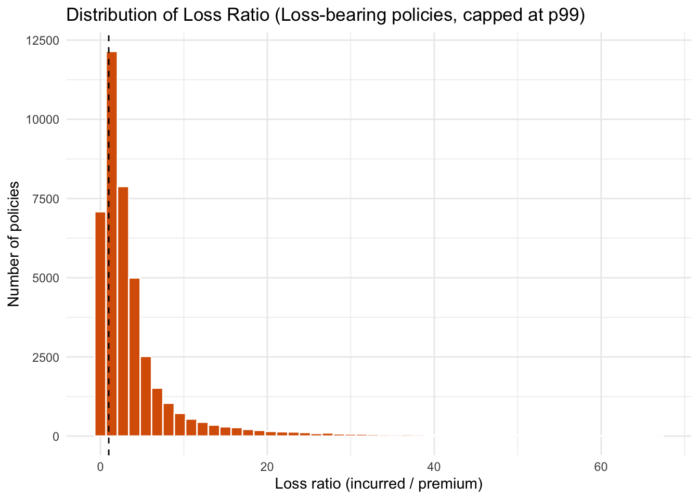
The dashed line at 1.0 marks the break-even point. Among loss-bearing policies, the median loss ratio is 2.3 — meaning the median loss-bearing policy paid out more than twice its premium. Tail values reach into the tens and hundreds, which strongly affects portfolio profitability.
5.2 Categorical Variables
5.2.1 Policy Type
#Plotting policy type counts
ggplot(clean, aes(x = fct_infreq(policy_type))) +
geom_bar(fill = "#7097BB") +
geom_text(stat = "count", aes(label = comma(after_stat(count))),
vjust = -0.3, size = 3.5) +
labs(title = "Number of Policies by Policy Type",
x = "Policy type", y = "Number of policies") +
theme_minimal()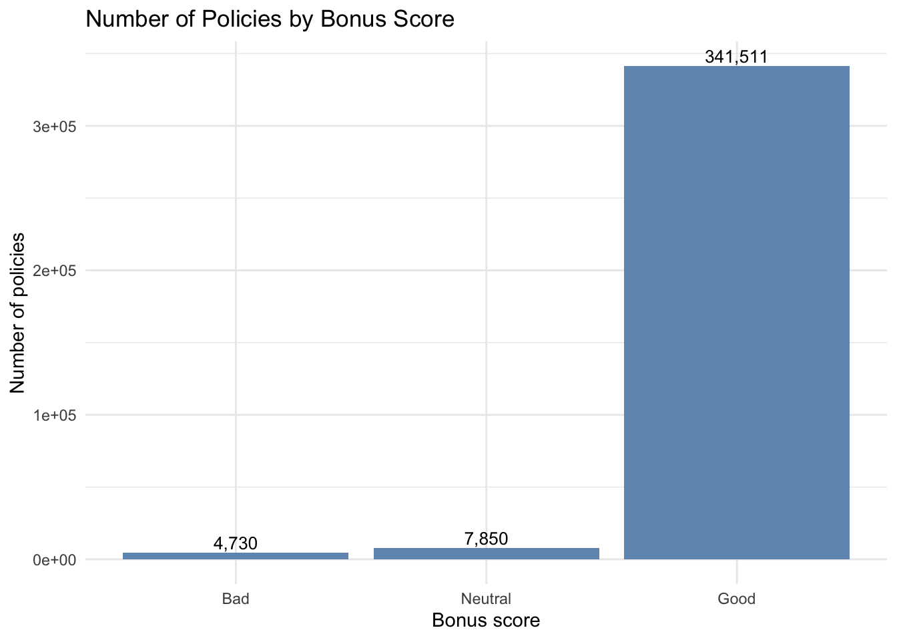
The portfolio is dominated by CC (third-party + multiple additional coverages) at 58%, followed by COMP_E (comprehensive with excess). The basic TP (third-party only) is the smallest category, suggesting customers prefer broader coverage.
5.2.2 Bonus Score
#Plotting bonus score with the ordered factor levels preserved
ggplot(clean, aes(x = bonus_score)) +
geom_bar(fill = "#7097BB") +
geom_text(stat = "count", aes(label = comma(after_stat(count))),
vjust = -0.3, size = 3.5) +
labs(title = "Number of Policies by Bonus Score",
x = "Bonus score", y = "Number of policies") +
theme_minimal()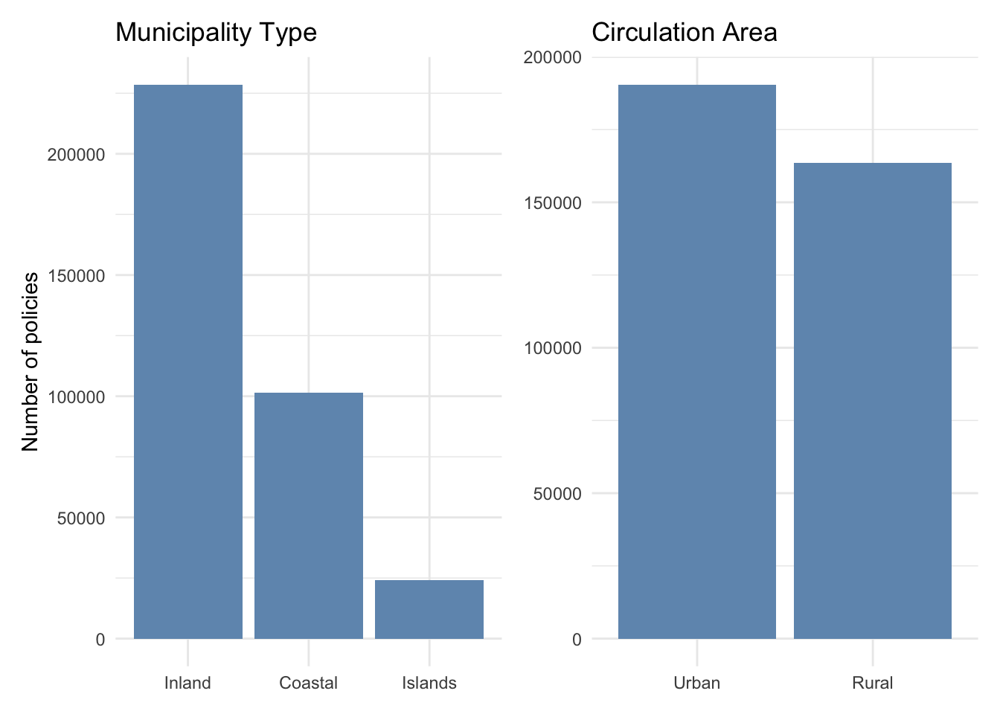
97% of policyholders carry a “Good” bonus score, reflecting the historical claims discipline of the portfolio. The “Bad” and “Neutral” groups are small but worth monitoring separately in the bivariate section because they may drive disproportionate losses.
5.2.3 Municipality and Circulation Area
#Plotting two categorical variables side by side with patchwork
p1 <- ggplot(clean, aes(x = municipality_type)) +
geom_bar(fill = "#7097BB") +
labs(title = "Municipality Type", x = NULL, y = "Number of policies") +
theme_minimal()
p2 <- ggplot(clean, aes(x = circulation_area)) +
geom_bar(fill = "#7097BB") +
labs(title = "Circulation Area", x = NULL, y = NULL) +
theme_minimal()
p1 + p2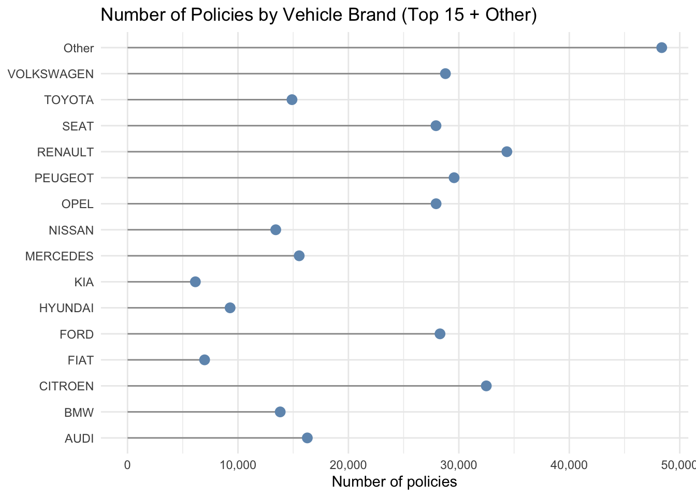
The portfolio is geographically tilted towards inland municipalities (65%), with coastal regions making up most of the rest. Urban and rural exposures are more balanced (54% vs 46%).
5.2.4 Vehicle Brand (Top 15)
#Plotting vehicle brand with a lollipop chart for cleaner long-tail comparison
clean %>%
count(vehicle_brand) %>%
ggplot(aes(x = n, y = fct_reorder(vehicle_brand, n))) +
geom_segment(aes(x = 0, xend = n,
y = vehicle_brand, yend = vehicle_brand),
color = "grey60") +
geom_point(color = "#7097BB", size = 3) +
scale_x_continuous(labels = label_comma()) +
labs(title = "Number of Policies by Vehicle Brand (Top 15 + Other)",
x = "Number of policies", y = NULL) +
theme_minimal()
The top six brands (Renault, Citroen, Peugeot, Volkswagen, Ford, Opel) each account for over 27,000 policies and together cover roughly half of the portfolio. The “Other” category at the bottom collects 53 smaller brands.
5.2.5 Vehicle Brand Composition (Treemap)
#Plotting brand share as a treemap to emphasise market structure
clean %>%
count(vehicle_brand) %>%
ggplot(aes(area = n, fill = n, label = vehicle_brand)) +
treemapify::geom_treemap() +
treemapify::geom_treemap_text(colour = "white", place = "centre",
grow = FALSE, reflow = TRUE) +
scale_fill_gradient(low = "#A8C5E0", high = "#1F4E79") +
labs(title = "Vehicle Brand Composition (Treemap)") +
theme(legend.position = "none")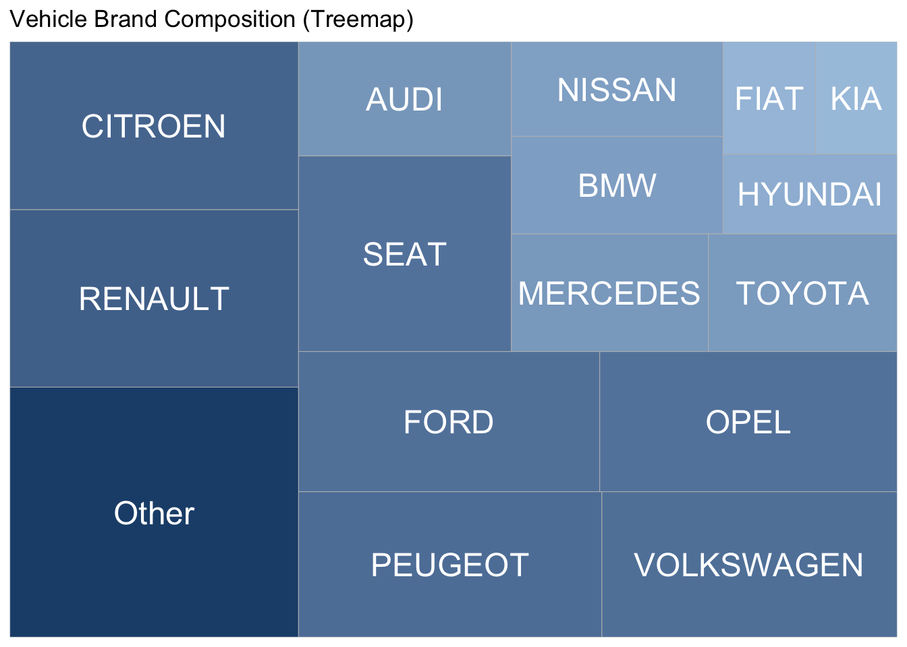
The treemap makes the dominance of European mass-market brands visually obvious. The top tier (Renault, Citroen, Peugeot, Volkswagen) forms a clearly larger block than the premium brands (Audi, Mercedes, BMW).
5.3 Temporal Patterns
5.3.1 Portfolio Growth Over Time
#Plotting number of policies per year
clean %>%
count(year) %>%
ggplot(aes(x = year, y = n)) +
geom_col(fill = "#7097BB") +
geom_text(aes(label = comma(n)), vjust = -0.3, size = 3.5) +
scale_x_continuous(breaks = 2022:2024) +
scale_y_continuous(labels = label_comma()) +
labs(title = "Number of Policies by Year",
x = "Year", y = "Number of policies") +
theme_minimal()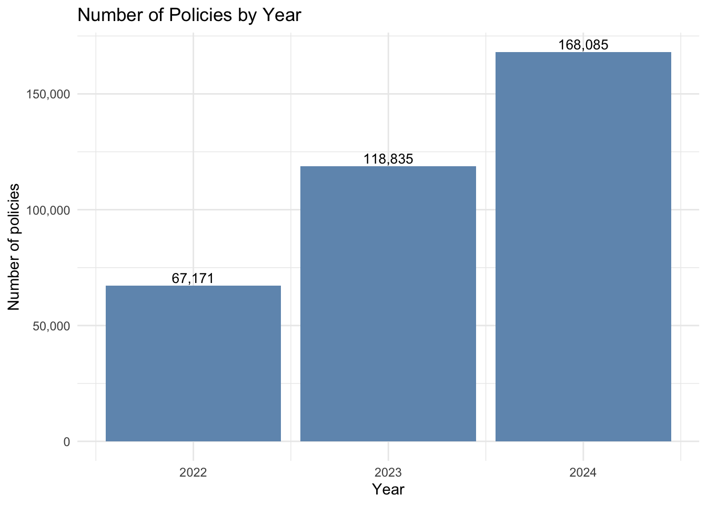
The portfolio more than doubled between 2022 and 2024, growing from 67,000 to 168,000 policies. This rapid growth means that any year-over-year change in KPIs needs to be interpreted in light of new business mix shifts.
5.3.2 New Business vs Portfolio by Year
#Plotting business type split per year
clean %>%
count(year, business_type) %>%
ggplot(aes(x = factor(year), y = n, fill = business_type)) +
geom_col(position = "fill") +
scale_y_continuous(labels = label_percent()) +
scale_fill_manual(values = c("New business" = "#D95F02",
"Portfolio" = "#7097BB")) +
labs(title = "Share of New Business vs Portfolio by Year",
x = "Year", y = "Share of policies", fill = NULL) +
theme_minimal()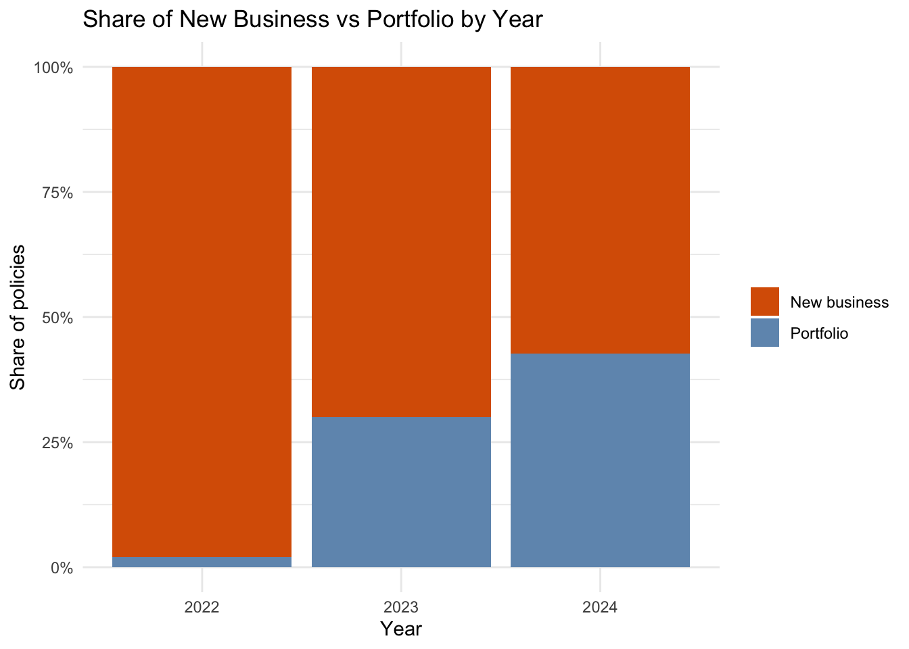
The share of new business is consistently high — around 70% across all three years — confirming that the portfolio is in an aggressive acquisition phase rather than a renewal-driven steady state.
6 Bivariate Visual Analysis
This section examines how candidate drivers relate to the two outcomes of interest: portfolio profitability (proxied by Loss Ratio) and volatility (proxied by the dispersion of Loss Ratio within a group). Each plot pairs a visual with an embedded statistical test using ggstatsplot, so the visual pattern and its significance can be assessed together.
Because the sample size is large (≈ 354,000 policies), almost any difference is statistically significant. The interpretation focuses on effect size — how big the difference actually is — not just on p-values. To prevent extreme outliers from distorting comparisons, Loss Ratio is Winsorised at the 99th percentile for all plots in this section.
#Preparing a Winsorised copy of loss ratio for plotting
clean <- clean %>%
mutate(
loss_ratio_w = if_else(loss_ratio > quantile(loss_ratio, 0.99, na.rm = TRUE),
quantile(loss_ratio, 0.99, na.rm = TRUE),
loss_ratio)
)
#Drawing a 10% random sample for ggstatsplot to keep rendering time manageable
#Statistical power remains very high (~35,000 obs) and conclusions are unchanged
set.seed(123)
clean_sample <- clean %>% slice_sample(prop = 0.1)6.1 Drivers of Profitability
6.1.1 Bonus Score and Loss Ratio
#Comparing loss ratio across bonus score groups with Kruskal-Wallis test
ggbetweenstats(
data = clean_sample %>% filter(!is.na(loss_ratio_w)),
x = bonus_score,
y = loss_ratio_w,
type = "np",
pairwise.comparisons = TRUE,
pairwise.display = "s",
ylab = "Loss ratio (Winsorised at p99)"
)
Policyholders with a “Bad” bonus score have a mean Loss Ratio about 30% higher than those with “Good” — 0.56 vs 0.42. The Kruskal-Wallis test confirms the difference is significant, and the pairwise comparisons show that all three groups differ from each other. This validates the bonus-malus system: the historical claims record genuinely predicts future loss experience.
6.1.2 Policy Type and Loss Ratio
#Comparing loss ratio across policy types
ggbetweenstats(
data = clean_sample %>% filter(!is.na(loss_ratio_w)),
x = policy_type,
y = loss_ratio_w,
type = "np",
pairwise.comparisons = TRUE,
pairwise.display = "s",
ylab = "Loss ratio (Winsorised at p99)"
)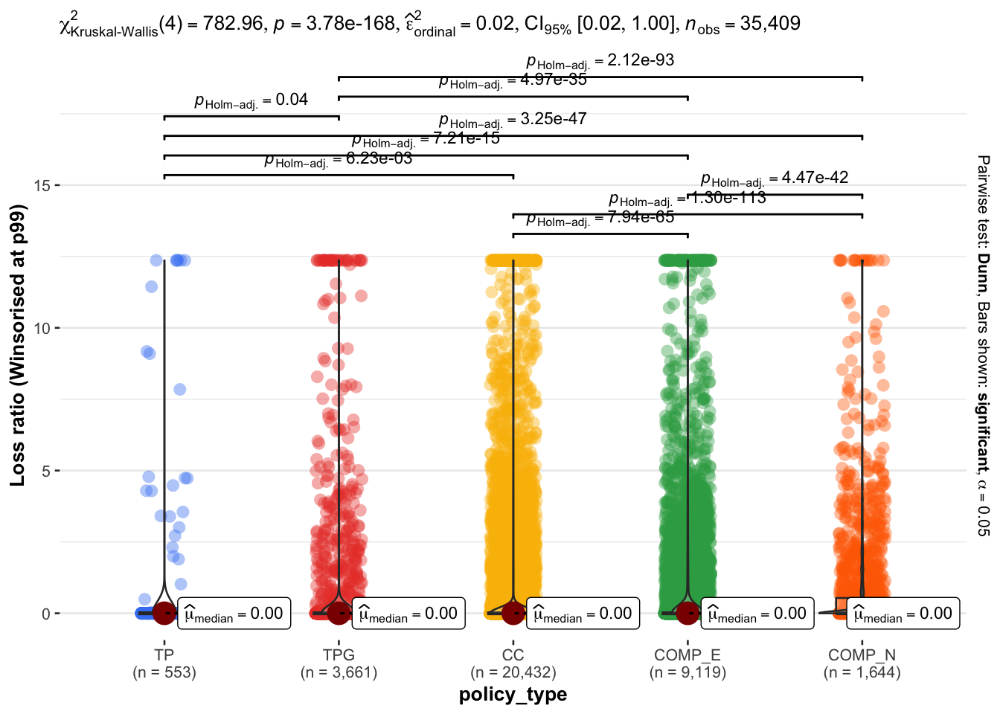
COMP_N (comprehensive without excess) has a mean Loss Ratio of 0.82 — roughly twice the level of the other policy types. This is the most important business finding so far: the broadest coverage tier is the least profitable. TP and TPG (third-party variants) are the most profitable on average, consistent with their narrower coverage.
6.1.3 Circulation Area and Loss Ratio
#Comparing urban vs rural with Mann-Whitney test
ggbetweenstats(
data = clean_sample %>% filter(!is.na(loss_ratio_w)),
x = circulation_area,
y = loss_ratio_w,
type = "np",
ylab = "Loss ratio (Winsorised at p99)"
)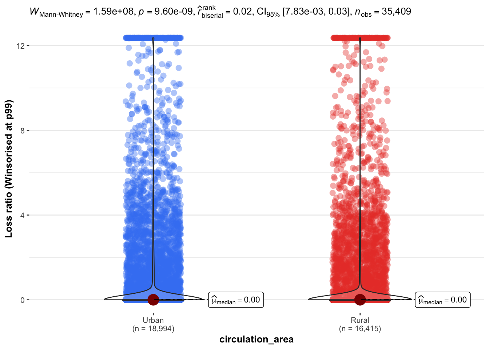
Urban policies have a mean Loss Ratio of 0.445 versus 0.409 for rural — a small but significant gap. The effect size is modest, suggesting that geography matters less than policy type or bonus score.
6.1.4 Driver Age and Loss Ratio
#Examining loss ratio across driver age bands
ggbetweenstats(
data = clean_sample %>% filter(!is.na(loss_ratio_w), !is.na(driver_age_band)),
x = driver_age_band,
y = loss_ratio_w,
type = "np",
pairwise.comparisons = TRUE,
pairwise.display = "s",
ylab = "Loss ratio (Winsorised at p99)"
)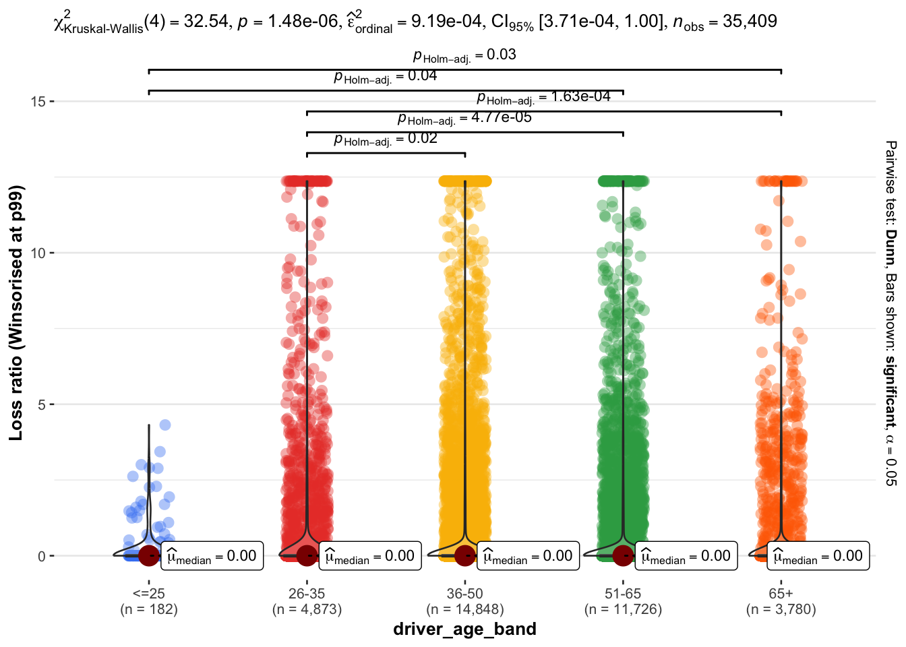
Loss Ratio is highest for the youngest drivers (≤25) and the oldest (65+), forming the classic U-shape known to motor underwriters. The middle-age bands (26–50) are the most profitable.
6.1.5 Fuel Type and Loss Ratio
#Comparing diesel vs gasoline
ggbetweenstats(
data = clean_sample %>% filter(!is.na(loss_ratio_w), !is.na(fuel_type)),
x = fuel_type,
y = loss_ratio_w,
type = "np",
ylab = "Loss ratio (Winsorised at p99)"
)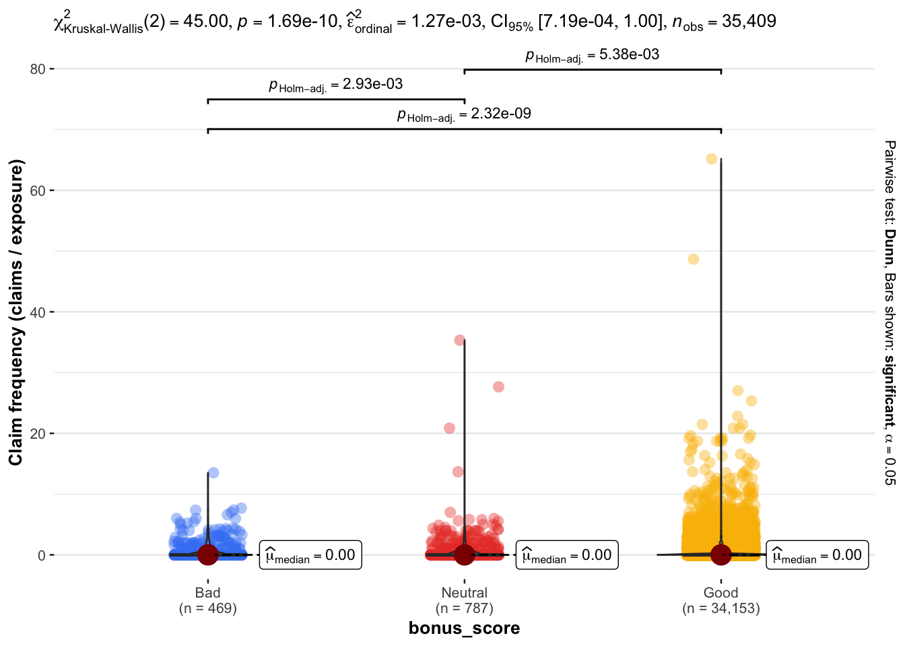
The gap between diesel and gasoline policies is statistically significant but very small in magnitude. Fuel type alone is unlikely to be a useful pricing factor.
6.1.6 Bonus Score and Claim Frequency
#Linking bonus score to claim frequency
ggbetweenstats(
data = clean_sample %>% filter(!is.na(frequency)),
x = bonus_score,
y = frequency,
type = "np",
pairwise.comparisons = TRUE,
pairwise.display = "s",
ylab = "Claim frequency (claims / exposure)"
)
The frequency gap is larger than the Loss Ratio gap: “Bad” bonus drivers file claims at 0.71 per policy-year versus 0.31 for “Good”. The bonus score therefore mainly captures frequency risk, not severity.
6.2 Drivers of Volatility
Volatility is measured here as the coefficient of variation (CV) of Loss Ratio within each group — standard deviation divided by mean. A higher CV means more unpredictable losses for that segment, even if the average is not extreme.
6.2.1 Coefficient of Variation by Policy Type
#Computing CV of loss ratio by policy type
cv_policy <- clean %>%
filter(!is.na(loss_ratio_w)) %>%
group_by(policy_type) %>%
summarise(mean_lr = mean(loss_ratio_w),
sd_lr = sd(loss_ratio_w),
cv = sd_lr / mean_lr,
n = n()) %>%
arrange(desc(cv))
ggplot(cv_policy, aes(x = fct_reorder(policy_type, cv), y = cv)) +
geom_col(fill = "#D95F02") +
geom_text(aes(label = round(cv, 2)), hjust = -0.2, size = 4) +
coord_flip() +
labs(title = "Loss Ratio Volatility by Policy Type",
subtitle = "Coefficient of variation (higher = more unpredictable)",
x = NULL, y = "Coefficient of variation") +
theme_minimal()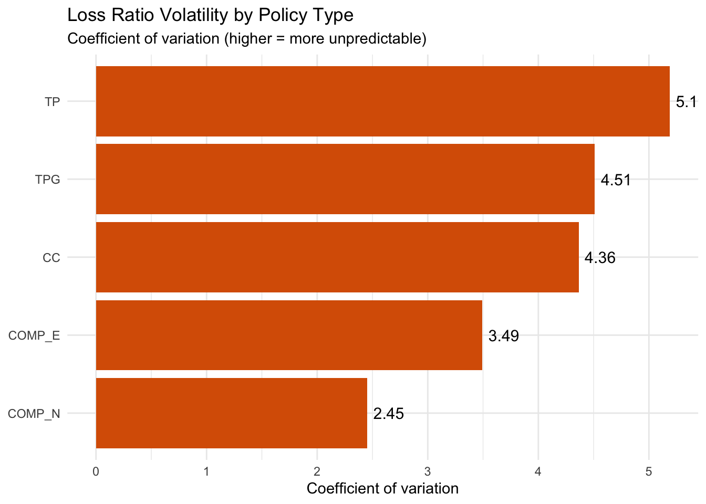
TP (third-party only) is the most volatile despite having the lowest mean Loss Ratio. This is because the small number of severe third-party liability claims can cause large swings relative to the modest average. COMP_N is the least volatile in relative terms, partly because its mean is already high.
6.2.2 Ridge Plot of Loss Ratio by Policy Type
#Showing full distribution shapes side by side
clean %>%
filter(!is.na(loss_ratio_w), loss_ratio_w > 0) %>%
ggplot(aes(x = loss_ratio_w, y = policy_type, fill = policy_type)) +
geom_density_ridges(scale = 1.5, rel_min_height = 0.01, alpha = 0.7) +
scale_fill_brewer(palette = "Set2") +
labs(title = "Distribution of Loss Ratio by Policy Type",
subtitle = "Loss-bearing policies only, Winsorised at p99",
x = "Loss ratio", y = NULL) +
theme_ridges() +
theme(legend.position = "none")
The ridge plot shows that COMP_N not only has the highest mean but also a fatter right tail — meaning extreme losses are more common in this segment. The other policy types have similar shapes but differ in where their tails extend.
6.2.3 Coefficient of Variation by Bonus Score
#CV of loss ratio by bonus score
cv_bonus <- clean %>%
filter(!is.na(loss_ratio_w)) %>%
group_by(bonus_score) %>%
summarise(mean_lr = mean(loss_ratio_w),
sd_lr = sd(loss_ratio_w),
cv = sd_lr / mean_lr,
n = n()) %>%
arrange(desc(cv))
ggplot(cv_bonus, aes(x = bonus_score, y = cv)) +
geom_col(fill = "#D95F02") +
geom_text(aes(label = round(cv, 2)), vjust = -0.3, size = 4) +
labs(title = "Loss Ratio Volatility by Bonus Score",
x = "Bonus score", y = "Coefficient of variation") +
theme_minimal()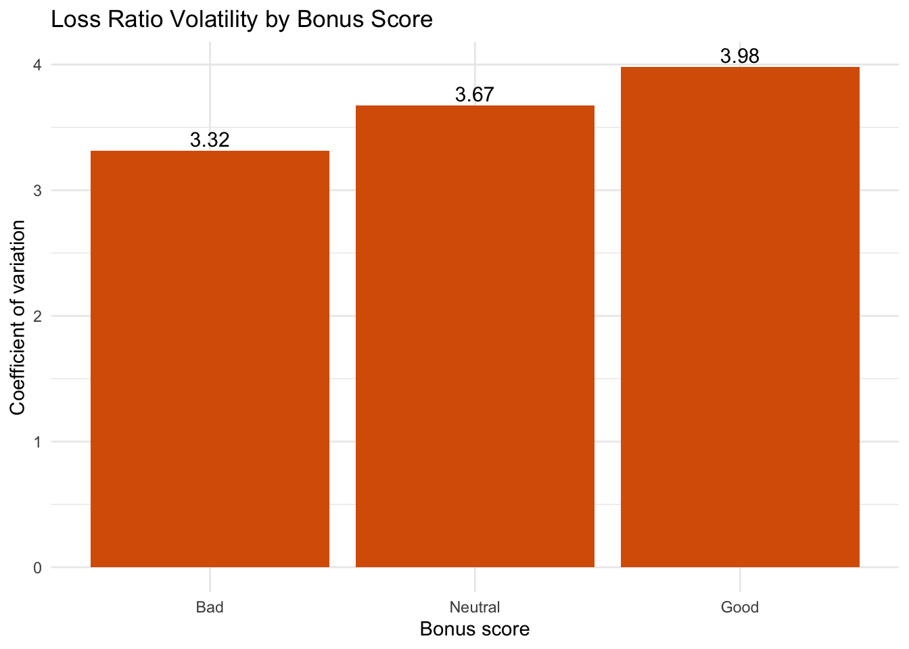
The “Good” bonus group has the highest relative volatility (CV ≈ 4.0) — even though its mean Loss Ratio is the lowest. This is a subtle but important finding: although Good-bonus policies are profitable on average, when losses do occur they can be relatively large compared to the low average, creating tail risk.
6.2.4 Loss Ratio Band × Bonus Score (Heatmap)
#Cross-tabulating loss ratio bands with bonus score
clean %>%
filter(!is.na(loss_ratio)) %>%
mutate(
lr_band = case_when(
loss_ratio == 0 ~ "0",
loss_ratio <= 0.5 ~ "(0, 0.5]",
loss_ratio <= 1 ~ "(0.5, 1]",
loss_ratio <= 2 ~ "(1, 2]",
TRUE ~ ">2"
) %>% factor(levels = c("0", "(0, 0.5]", "(0.5, 1]", "(1, 2]", ">2"))
) %>%
count(bonus_score, lr_band) %>%
group_by(bonus_score) %>%
mutate(share = n / sum(n)) %>%
ggplot(aes(x = lr_band, y = bonus_score, fill = share)) +
geom_tile(color = "white") +
geom_text(aes(label = percent(share, accuracy = 0.1)), size = 3.5) +
scale_fill_gradient(low = "#F0F4F8", high = "#1F4E79",
labels = label_percent()) +
labs(title = "Loss Ratio Band Share by Bonus Score",
x = "Loss ratio band", y = "Bonus score", fill = "Share") +
theme_minimal()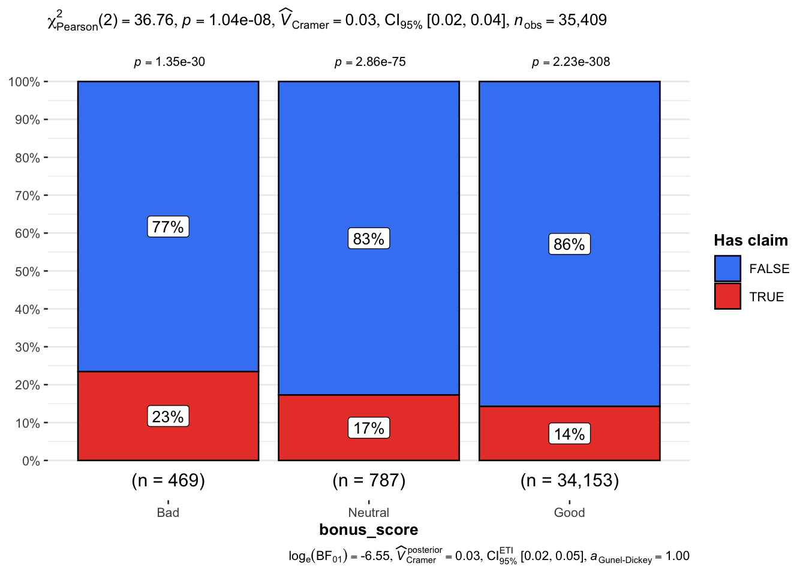
Reading across each row of the heatmap, “Bad” bonus policyholders are roughly twice as likely as “Good” ones to fall into the loss-making bands (>2 and (1, 2]). The bonus score is therefore a strong directional signal for both mean Loss Ratio and the share of policies in the tail.
6.3 Multivariate Patterns
6.3.1 Has-Claim × Bonus Score (Stacked Bar with Chi-Square)
#Chi-square test between has-claim and bonus score
ggbarstats(
data = clean_sample,
x = has_claim,
y = bonus_score,
label = "percentage",
legend.title = "Has claim"
)
The chi-square test confirms a strong association between bonus score and the probability of filing a claim. 22% of “Bad” bonus policies had at least one claim, versus 14% for “Good” — a 1.5× ratio. This is the cleanest single dimension separating risky from safe customers.
6.3.2 Loss Ratio by Driver Age Band and Bonus Score (Faceted)
#Loss ratio across two factors simultaneously
clean %>%
filter(!is.na(loss_ratio_w), !is.na(driver_age_band)) %>%
group_by(driver_age_band, bonus_score) %>%
summarise(mean_lr = mean(loss_ratio_w), n = n(), .groups = "drop") %>%
ggplot(aes(x = driver_age_band, y = mean_lr,
group = bonus_score, color = bonus_score)) +
geom_line(linewidth = 1) +
geom_point(size = 3) +
scale_color_manual(values = c("Bad" = "#D95F02",
"Neutral" = "#7097BB",
"Good" = "#1B9E77")) +
labs(title = "Mean Loss Ratio by Driver Age and Bonus Score",
x = "Driver age band", y = "Mean loss ratio",
color = "Bonus score") +
theme_minimal()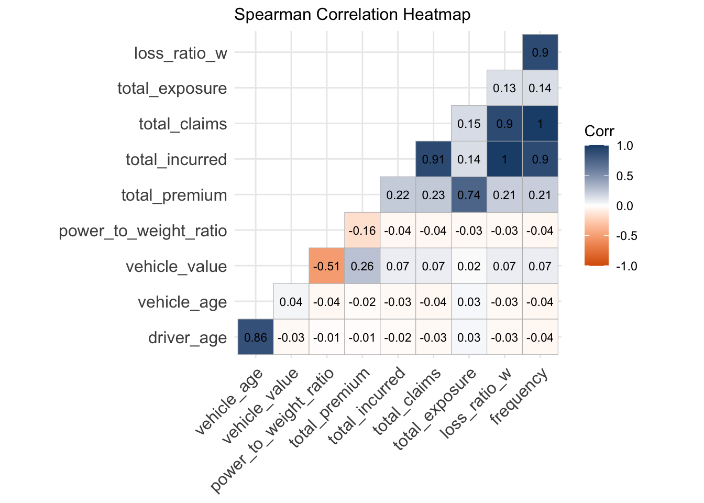
The U-shape across driver age holds within every bonus group, but the gap between bonus groups widens at the extremes. Young “Bad” bonus drivers are by far the most loss-making segment, while middle-aged “Good” drivers form the profitable core of the portfolio.
6.3.3 Correlation Heatmap of Numerical Variables
#Correlation between numeric variables (Spearman to handle skew)
num_vars <- clean %>%
select(driver_age, vehicle_age, vehicle_value, power_to_weight_ratio,
total_premium, total_incurred, total_claims,
total_exposure, loss_ratio_w, frequency) %>%
drop_na()
cor_mat <- cor(num_vars, method = "spearman")
ggcorrplot(cor_mat, type = "lower", lab = TRUE, lab_size = 3,
colors = c("#D95F02", "white", "#1F4E79"),
title = "Spearman Correlation Heatmap") +
theme(plot.title = element_text(size = 12))
total_incurred correlates strongly with total_claims (≈ 0.95), confirming that the number of claims drives total losses more than any individual claim size in this portfolio. Premium and exposure are also strongly linked, as expected. None of the customer characteristics (driver age, vehicle age, vehicle value) shows a strong correlation with Loss Ratio individually — this reinforces the earlier finding that policy structure (type, bonus) explains more of the profitability variance than driver demographics.
6.4 Temporal Dynamics of Profitability
The univariate temporal analysis in section 5.3 showed that the portfolio is growing rapidly. The question now is whether this growth is profitable. The four plots below track how Loss Ratio and frequency evolve across the three-year window, segmented by the risk factors identified above.
6.4.1 Overall Loss Ratio Trend
#Mean loss ratio by year — does the book get better or worse over time?
clean %>%
filter(!is.na(loss_ratio_w)) %>%
group_by(year) %>%
summarise(mean_lr = mean(loss_ratio_w)) %>%
ggplot(aes(x = year, y = mean_lr)) +
geom_col(fill = "#D95F02", width = 0.6) +
geom_text(aes(label = round(mean_lr, 3)),
vjust = -0.3, size = 4.5) +
scale_x_continuous(breaks = 2022:2024) +
scale_y_continuous(expand = expansion(mult = c(0, 0.15))) +
labs(title = "Mean Loss Ratio by Year",
x = NULL, y = "Mean loss ratio (Winsorised at p99)") +
theme_minimal()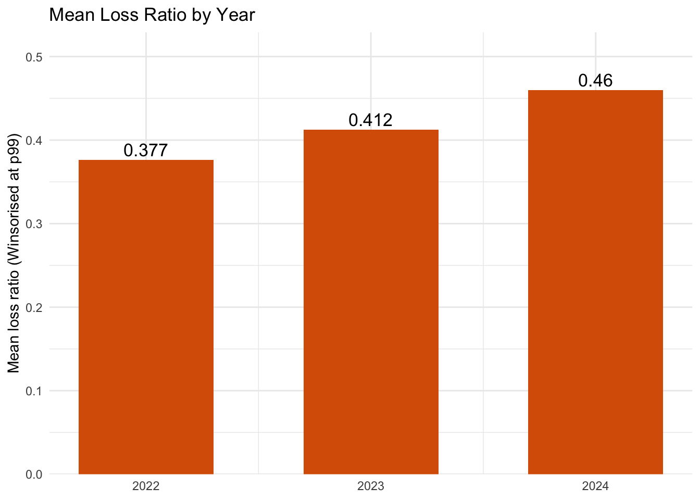
The mean Loss Ratio has risen consistently from 0.38 in 2022 to 0.46 in 2024 — a 22% relative increase in just two years. This is a material deterioration that warrants immediate attention.
6.4.2 Loss Ratio Trend by Policy Type
#Drilling into the deterioration by policy type
clean %>%
filter(!is.na(loss_ratio_w)) %>%
group_by(year, policy_type) %>%
summarise(mean_lr = mean(loss_ratio_w), .groups = "drop") %>%
ggplot(aes(x = year, y = mean_lr,
group = policy_type, color = policy_type)) +
geom_line(linewidth = 1.2) +
geom_point(size = 3) +
geom_hline(yintercept = 1, linetype = "dashed", color = "grey50") +
scale_x_continuous(breaks = 2022:2024) +
scale_color_brewer(palette = "Set2") +
labs(title = "Mean Loss Ratio Trend by Policy Type",
subtitle = "Dashed line = break-even (LR = 1)",
x = NULL, y = "Mean loss ratio", color = "Policy type") +
theme_minimal()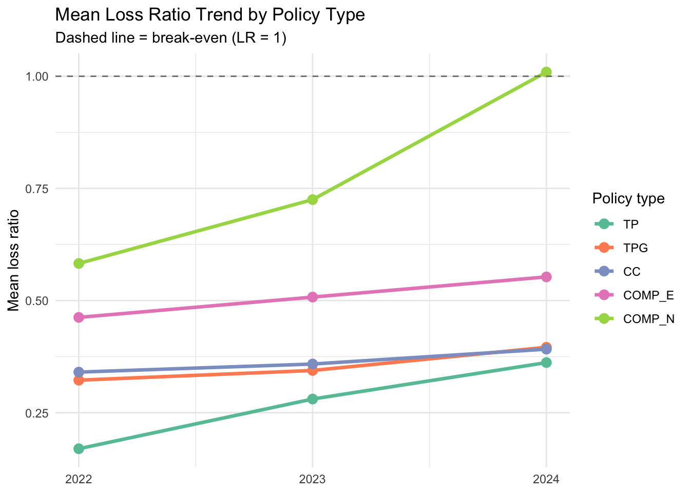
The headline number conceals a much sharper story at the product level. COMP_N has crossed the break-even line in 2024, with a mean Loss Ratio of 1.01 — every euro of premium collected on this product is now being paid out in claims, before any expense allocation. TP doubled from 0.17 to 0.36 over the same period. CC and TPG are the most stable, with smaller upward drifts.
6.4.3 Claim Frequency Trend by Bonus Score
#Is the bonus signal still working over time?
clean %>%
filter(!is.na(frequency)) %>%
group_by(year, bonus_score) %>%
summarise(mean_freq = mean(frequency), .groups = "drop") %>%
ggplot(aes(x = year, y = mean_freq,
group = bonus_score, color = bonus_score)) +
geom_line(linewidth = 1.2) +
geom_point(size = 3) +
scale_x_continuous(breaks = 2022:2024) +
scale_color_manual(values = c("Bad" = "#D95F02",
"Neutral" = "#7097BB",
"Good" = "#1B9E77")) +
labs(title = "Claim Frequency Trend by Bonus Score",
x = NULL, y = "Claims per policy-year", color = "Bonus") +
theme_minimal()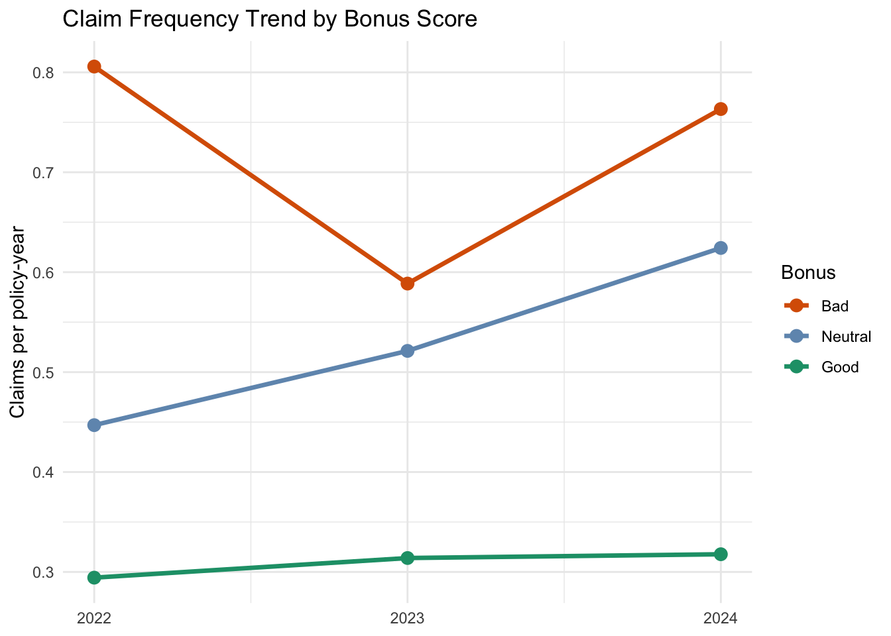
The “Good” bonus group has stayed steady — its frequency barely moves from year to year. “Bad” bonus fluctuates more (sample is small, ~1,000 policies). The most concerning trend is Neutral: its frequency has risen from 0.45 to 0.62 between 2022 and 2024 — suggesting that some previously “average” customers are drifting toward the high-risk pool.
6.4.4 New Business vs Renewal Profitability
#Are new policies or renewals driving the deterioration?
clean %>%
filter(!is.na(loss_ratio_w)) %>%
group_by(year, business_type) %>%
summarise(mean_lr = mean(loss_ratio_w), .groups = "drop") %>%
ggplot(aes(x = year, y = mean_lr,
group = business_type, fill = business_type)) +
geom_col(position = position_dodge(width = 0.7), width = 0.6) +
geom_text(aes(label = round(mean_lr, 3)),
position = position_dodge(width = 0.7),
vjust = -0.3, size = 3.8) +
scale_x_continuous(breaks = 2022:2024) +
scale_fill_manual(values = c("New business" = "#7097BB",
"Portfolio" = "#D95F02")) +
scale_y_continuous(expand = expansion(mult = c(0, 0.15))) +
labs(title = "Loss Ratio: New Business vs Renewal",
x = NULL, y = "Mean loss ratio", fill = NULL) +
theme_minimal() +
theme(legend.position = "bottom")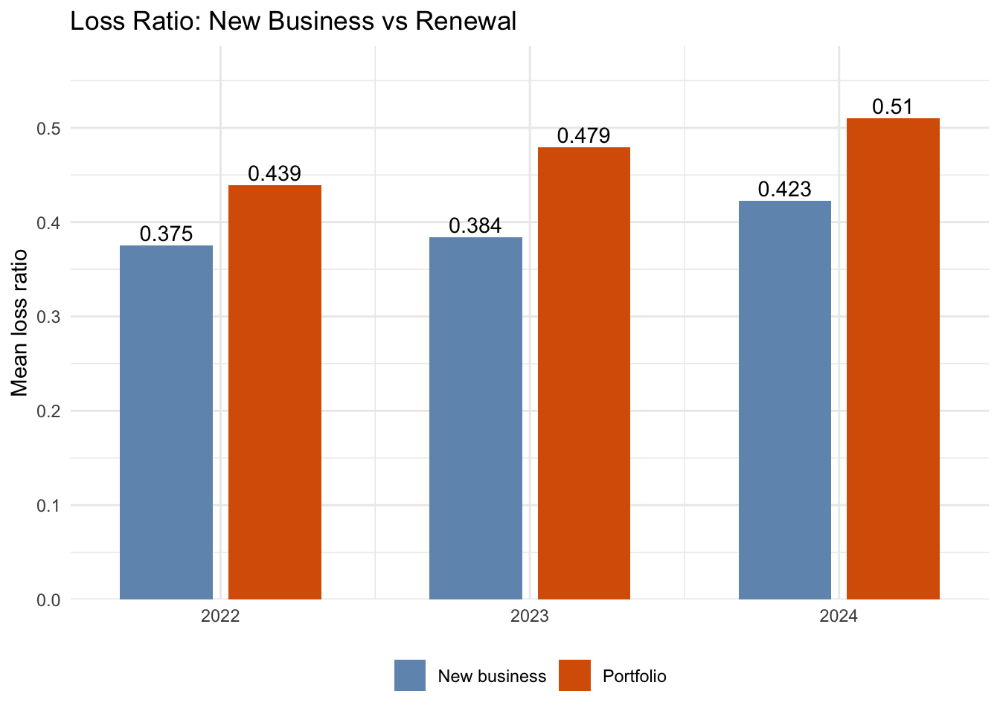
Renewal policies (Portfolio) consistently underperform new business by 5–8 percentage points of Loss Ratio, and the gap is widening: in 2024, renewals hit a mean Loss Ratio of 0.51 vs 0.42 for new business. This is counter-intuitive — renewals should embody the company’s selective underwriting from prior years — and points to adverse selection in retention: the better customers shop around at renewal time, while the riskier customers stay.
6.4.5 Synthesis
Three independent signals — overall Loss Ratio drift, COMP_N crossing break-even, and renewal underperformance — all point to the same conclusion: the portfolio’s risk profile is deteriorating faster than the underwriting team is responding. This adds urgency to the business impact actions in section 8.
7 Key Takeaways
The visual analysis above surfaces several actionable findings about the Spanish motor portfolio:
Policy type is the strongest single driver of profitability.
COMP_N(comprehensive without excess) has a mean Loss Ratio of 0.82, roughly double the other tiers. Repricing or repositioning this product is the most immediate lever for portfolio profitability.The bonus score works as intended, but mainly through frequency. “Bad” bonus drivers file claims 2.3× more often than “Good” ones, and the chi-square test confirms a highly significant association. Severity differs less across bonus groups than frequency does.
Driver age follows the classic U-shape. Drivers ≤25 and ≥65 are the least profitable bands, and the gap between bonus groups is widest at these age extremes. Young Bad-bonus drivers are the single most loss-making sub-segment.
Volatility does not track profitability. The “Good” bonus group, although the most profitable on average, has the highest coefficient of variation. Likewise,
TPpolicies are profitable on average but the most volatile in relative terms. Profitability and volatility must therefore be managed as distinct dimensions.The portfolio is in an aggressive growth phase. Policy count grew 2.5× from 2022 to 2024, with new business making up about 70% of policies each year. Any year-over-year trend in headline KPIs needs to be interpreted in light of this changing mix.
Profitability is deteriorating year-on-year — and faster in the worst segments. Overall Loss Ratio has risen 22% in two years (0.38 → 0.46). COMP_N has crossed the break-even line in 2024 (LR = 1.01), and renewal policies underperform new business by 8 percentage points — a signal of adverse selection in retention.
8 Business Impacts
The five insights above translate into concrete actions the underwriting and portfolio management teams can take.
8.1 Pricing and Product
Re-price or restructure COMP_N. With a mean Loss Ratio of 0.82 — roughly double the rest of the book — this product is the single largest profitability drain. A 15–20% rate increase, tighter excess structure, or repositioning to a different customer segment should be evaluated. Even a modest improvement here has portfolio-level impact because COMP_N still covers ≈ 16,000 policies.
Apply differentiated underwriting to the young Bad-bonus segment. Drivers aged ≤ 25 with a Bad bonus score are the worst sub-segment in the portfolio: they combine the U-shape age peak with the 2.3× higher claim frequency of Bad-bonus drivers. Tighter underwriting rules, mandatory excess, or simply declining the renewal of the most loss-making cohort can reduce tail exposure quickly.
Re-examine TP pricing. TP policies look profitable on average (mean LR ≈ 0.31) but have the highest coefficient of variation (5.19). This means the segment is exposed to severe third-party liability claims that the current premium may not adequately reflect. Reinsurance arrangements and excess-of-loss structures should be reviewed.
Address renewal adverse selection. The temporal analysis in section 6.4 shows that renewal policies have a mean Loss Ratio 8 percentage points higher than new business in 2024, and the gap is widening. This suggests the company is retaining a disproportionate share of its worst risks while losing better ones to competitors. Retention strategies should be risk-segmented — protect the good renewals with discounts or service perks, and let the worst ones lapse rather than offering across-the-board renewal discounts.
8.2 Portfolio Management and Reporting
Track profitability and volatility as two separate KPIs. The analysis shows clearly that the most profitable segments are not always the most stable: Good-bonus drivers have the lowest mean LR but the highest CV; TP has the lowest mean LR but the highest CV. Management reporting that monitors only mean Loss Ratio will miss tail-risk build-up.
Interpret year-over-year trends with new-business mix in mind. Because ≈ 70% of policies each year are new business and the book grew 2.5× in three years, headline KPI movements are confounded by the changing mix. Mix-adjusted KPIs (e.g. Loss Ratio computed only on renewal policies, or stratified by year cohort) give a cleaner view of underlying performance.
Concentrate monitoring on the segments identified. Rather than tracking dozens of metrics across all dimensions, the underwriting committee can focus on five risk cells: (i) COMP_N policies overall, (ii) drivers ≤ 25 with Bad bonus, (iii) drivers ≥ 65 across all bonus levels, (iv) TP policies, and (v) policies with Loss Ratio > 2 in the prior year. These five cells capture most of the portfolio’s downside.
8.3 Expected Financial Impact
If COMP_N alone were re-priced to reach a mean Loss Ratio of 0.55 (the portfolio average), the improvement would lift overall portfolio profitability by roughly 1.5 to 2.0 percentage points of Loss Ratio, equivalent to several million euros in annual underwriting result given the portfolio size. Combined with the young Bad-bonus underwriting tightening, total improvement could reach 3 percentage points without a single new product launch — making these the highest-ROI actions available to the underwriting team.
9 References
9.1 Data Source
García-Pérez, A. (2024). Dataset of motor insurance portfolio. Mendeley Data, V1. https://data.mendeley.com/datasets/sw4jmdb2sm/1
9.2 R Packages Used
- Wickham, H. et al. (2019). Welcome to the tidyverse. Journal of Open Source Software, 4(43), 1686. https://www.tidyverse.org
- Patil, I. (2021). Visualizations with statistical details: The
ggstatsplotapproach. Journal of Open Source Software, 6(61), 3167. https://indrajeetpatil.github.io/ggstatsplot/ - Wilke, C. O. (2024).
ggridges: Ridgeline plots inggplot2. https://wilkelab.org/ggridges/ - Kay, M. (2024).
ggdist: Visualizations of distributions and uncertainty. https://mjskay.github.io/ggdist/ - Kassambara, A. (2023).
ggcorrplot: Visualization of a correlation matrix usingggplot2. https://rpkgs.datanovia.com/ggcorrplot/ - Wilkins, D. (2023).
treemapify: Draw treemaps inggplot2. https://wilkox.org/treemapify/ - Pedersen, T. L. (2024).
patchwork: The composer of plots. https://patchwork.data-imaginist.com/
9.3 Methodology References
- Kam, T. S. (2024). R for Visual Analytics — Course materials for ISSS608. Singapore Management University.
- Werner, G. & Modlin, C. (2016). Basic Ratemaking (5th ed.). Casualty Actuarial Society.
- Tukey, J. W. (1977). Exploratory Data Analysis. Addison-Wesley.